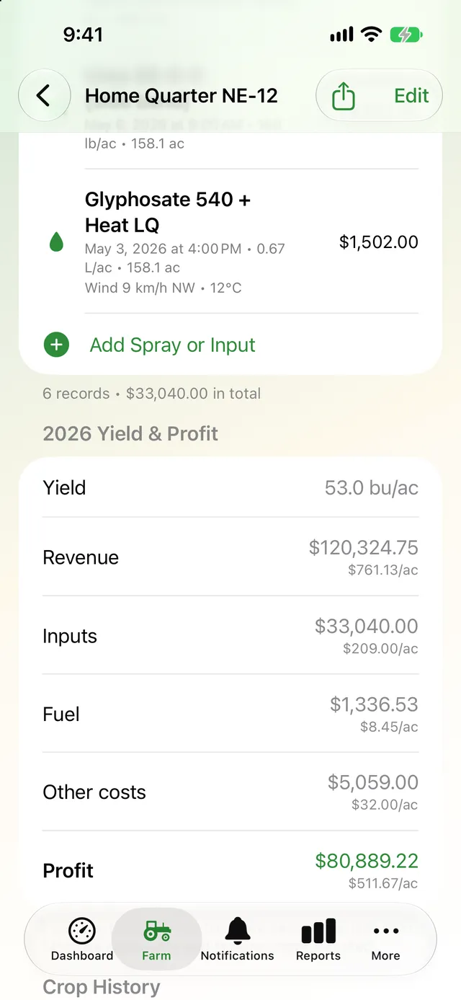
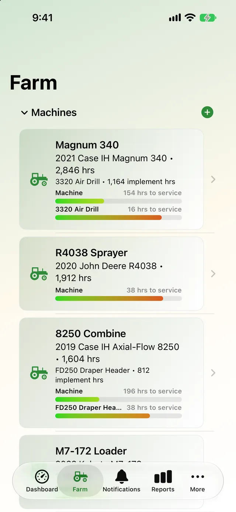
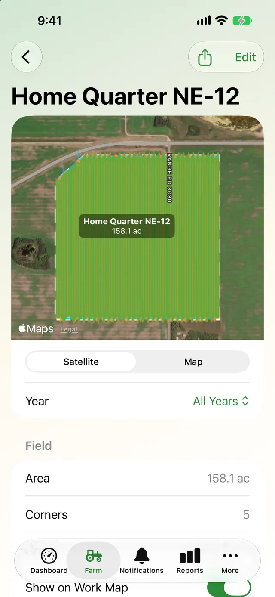
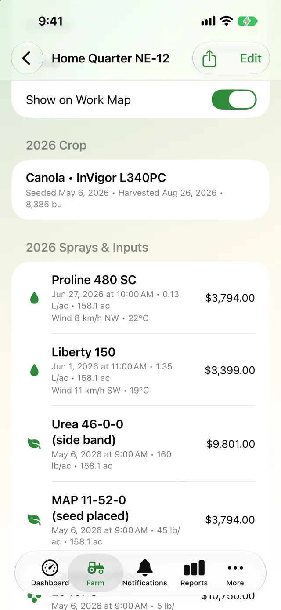

Every hour.
Every pass.
Every field.
AgSaver keeps track of the hours, work, servicing and costs of your tractors, combines and implements, and maps your fields, sprays, crops and yields, so you always know what each machine and each field is doing and what it costs.


iPhone, iPad & WatchStart work from your wrist
Private iCloud syncNo account to create
GPS work mapsAcres worked, pass by pass
Built for crewsShare hours and work in one file
One app for the machines and the fields
AgSaver started as an hour meter and service log. It now covers the whole season, from the first pass to the yield and profit on each field.
Hour meter & work sessions
Every machine gets a live hour meter. Start work with one tap on iPhone or Apple Watch and the hours add themselves.
- One-tap start, pause and stop
- Auto pause when the machine sits idle
- Apple Watch work timer
Work maps & guidance
See every pass on a satellite map, track how many acres are left in the field, and follow A–B lines at your implement's width.
- Path drawn at working width
- Acres remaining, lap by lap
- A–B guidance lines

Fields & boundaries
Outline your fields by tapping corners or driving the edge, or bring them in from Operations Center, FieldView or Google Earth.
- Import shapefile, KML, KMZ or GeoJSON
- Group fields by farm
- Acres worked matched automatically

Crops, sprays & profit
Record crops, sprays and inputs field by field, check the spray window, and see yield, revenue and profit per acre.
- Spray records with weather filled in
- Hour-by-hour spray window
- Yield and profit per field

Machines, service & fuel
Keep tractors, combines, sprayers and implements in one place, with service intervals, reminders, parts, fuel and costs.
- Service bars from green to red
- Reminders by hours or date
- Fuel use in L/hr and cost per acre

Reports, crew & your data
Farm and field reports, a live crew map, one-file sync for everyone who runs your machines, and full exports of your data.
- Cost of ownership and fuel reports
- Live crew map and sync files
- Export everything to a zip
Know exactly how many hours are on every machine
The dashboard shows a live hour meter for the machine you're on, read to the tenth of an hour, with a bar for every service that's coming due. When something is overdue, it turns red and says so.
- Start, pause and stop work with one tap, on your phone or your Watch
- Hours add themselves to the machine and the implement on it
- Auto pause stops the clock while the machine sits idle

See where you've been and what's left to do
AgSaver records the path you drive and draws it at the working width of your implement. Once you've driven a lap, it tells you how many acres are still left inside, and A–B lines show which pass you're on.
- Acres worked are matched to your fields automatically
- Satellite farm map with this year's and last year's work
- Live crew map shows where everyone is working

Turn records into yield, cost and profit
Log each field's crop, sprays, fertilizer and seed as you go. At harvest, add the bushels and AgSaver works out revenue, input costs, fuel, other costs and profit, per field and per acre.
- Spray records with wind and temperature filled in from Apple Weather
- Crop history for every field, year after year
- PDF reports to share with your agronomist or landlord

Take a look
Swipe through the app. Big numbers and big buttons, made to use in the cab.


Your farm data stays yours
Records are stored on your devices and sync through your own private iCloud. They are never sent to me. Location is used only while a work session is running, and crew sharing is off unless you turn it on.
Put every hour and every acre to work.
AgSaver runs on iPhone, iPad and Apple Watch. Your records stay on your devices and your own iCloud.
 Scan to download
Scan to download